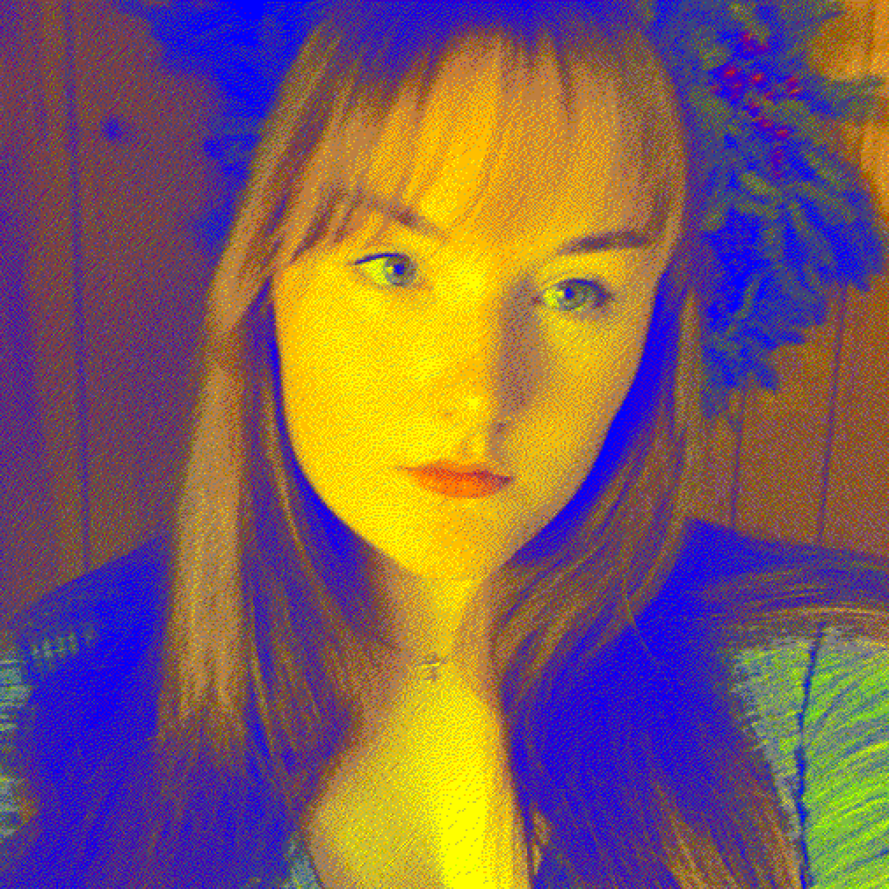

| Name | Josephine Koch |
|---|---|
| Nickname | Josie |
| Born | June 2000 |
| From | Indiana, USA |
| Education | Brain and Behavior Science (BS), Spanish (BA), Purdue University |
| Languages I use the most | JavaScript, Python |
| Currently learning | C, C++, GLSL |
| Favorite ice cream flavor | Strawberry |
| Favorite music genres | Electronic, symbolist and contemporary classical, and art pop |
| Favorite mediums (to see or use) | 2D & 3D computer graphics, printmaking, watercolor, charcoal, installation sculptures |
Hello! My name is Josie. I am currently an
engineering student at Purdue. In 2024, I
received
a BS in Brain and Behavior Science and a BA in
Spanish. The reasons for this switch
are a long story, but, in short,
I have struggled with severe OCD, which
I am now in remission
for! I have always
loved art and making things. For me,
the most helpful approach to treating
OCD was the ACT (Acceptance and
Commitment Therapy) approach, which
emphasizes acceptance of
one's thoughts
(rather than trying to change them) and commitment
to values-based actions.
I think this approach was the most
helpful because it allowed me to take the pressure off "thinking
correctly" and instead focus on making things. So, since I began that process in early 2025, I've
been ramping up my "makes" and my sharing of them. I hope you enjoy what you find here, and perhaps if
you're in a similar situation, maybe you'll feel a little hopeful. For most of my life, I thought my life
had to be extremely small, that there was some secret password that allowed other people to be normal
and engage in the world. Fortunately, there is no password! Sure, things are harder when you're noticeably
different, but there's nothing to say this makes you less capable. I hope that this website will be
a celebration of this new belief, and my ultimate goal is that it would be a source
of inspiration for
anyone for any reason.